Antes de começar
O que aparece no seu menu depende de duas coisas: o que a sua empresa contratou e o seu papel (Dono, Atendente, Operador, Motorista…). Se alguma tela deste manual não aparece para você, veja Não encontro uma tela no menu.
O sistema funciona no navegador do computador, do tablet e do celular. Não é preciso instalar nada.
1 · AcessoEntrar no sistema
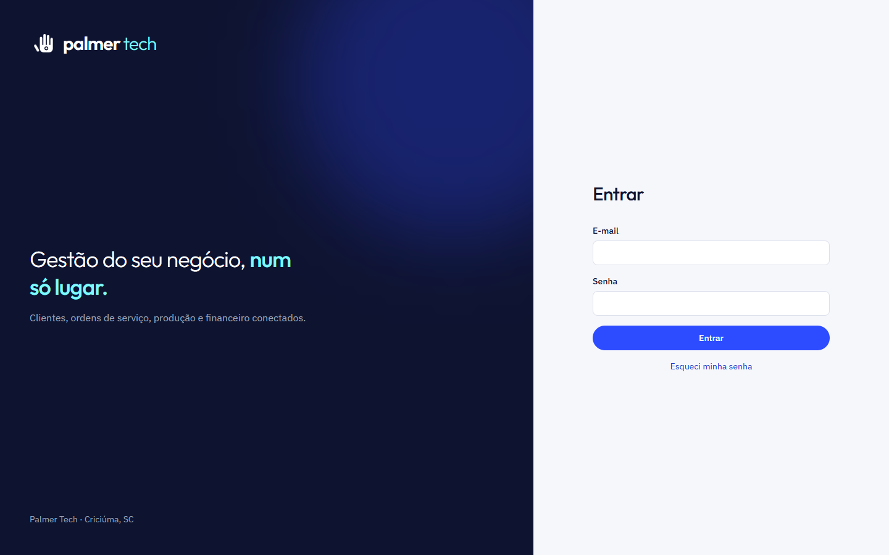
Primeiro acesso (convite)
- Abra o e-mail “Você foi convidado para…” enviado quando o dono da empresa cadastrou você.
- Clique no link. Ele vale por 7 dias.
- Confira o seu nome, crie uma senha com pelo menos 10 caracteres e clique em Salvar senha.
- Volte para a tela de login e entre com o seu e-mail e a senha nova.
Esqueci minha senha
- Na tela de login, clique em Esqueci minha senha e informe o seu e-mail.
- Abra o e-mail “Redefinição de senha”. O link vale por 30 minutos e só pode ser usado uma vez.
- Crie a senha nova. Por segurança, todas as sessões que estavam abertas em outros aparelhos são encerradas.
Errou a senha várias vezes? Depois de 5 tentativas erradas o acesso fica bloqueado por 15 minutos. Se precisar entrar antes disso, use Esqueci minha senha.
Trabalha em mais de uma empresa?
Ao entrar, o sistema pergunta em qual empresa você quer trabalhar. Para trocar depois, use o seletor com o nome da empresa no topo do menu. Para sair, use Sair no rodapé do menu.
3 · CadastroClientes
Em Clientes você busca por nome, e-mail, CPF/CNPJ ou telefone. Clique no nome para abrir a ficha.
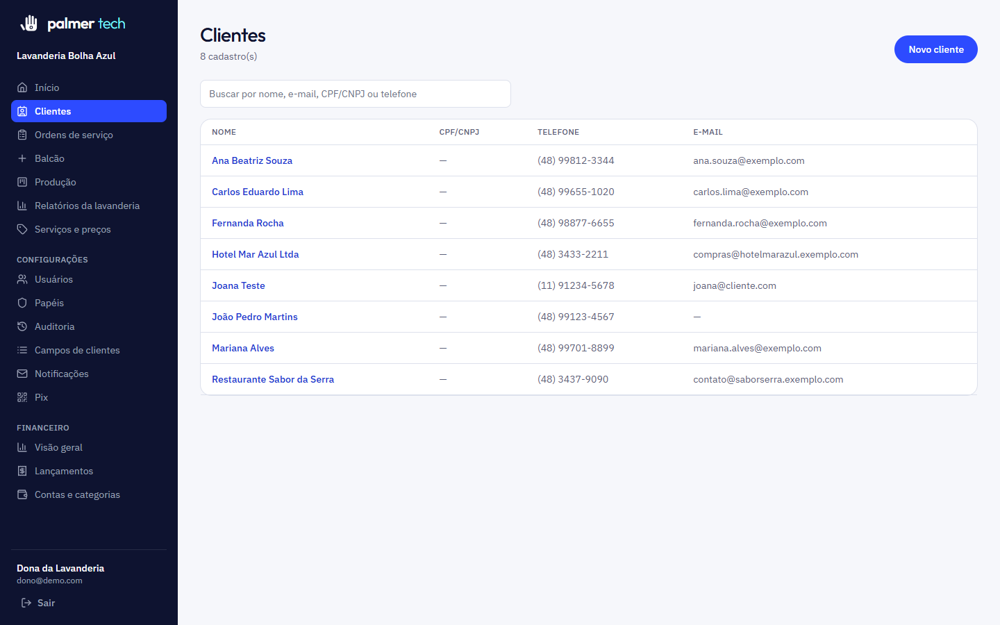
Cadastrar um cliente
- Clique em Novo cliente.
- Escolha Pessoa física ou Empresa e preencha o nome.
- CPF/CNPJ, telefone, e-mail e endereço são opcionais, mas o e-mail é o que permite avisar o cliente quando as peças ficam prontas. Informe o telefone com DDD.
- Clique em Salvar.
Cadastros repetidos: o sistema não deixa cadastrar o mesmo CPF/CNPJ duas vezes e mostra o cadastro que já existe. Se o e-mail ou telefone já aparece em outro cliente (casal, sócios), ele avisa e você pode clicar em Salvar mesmo assim.
A ficha do cliente
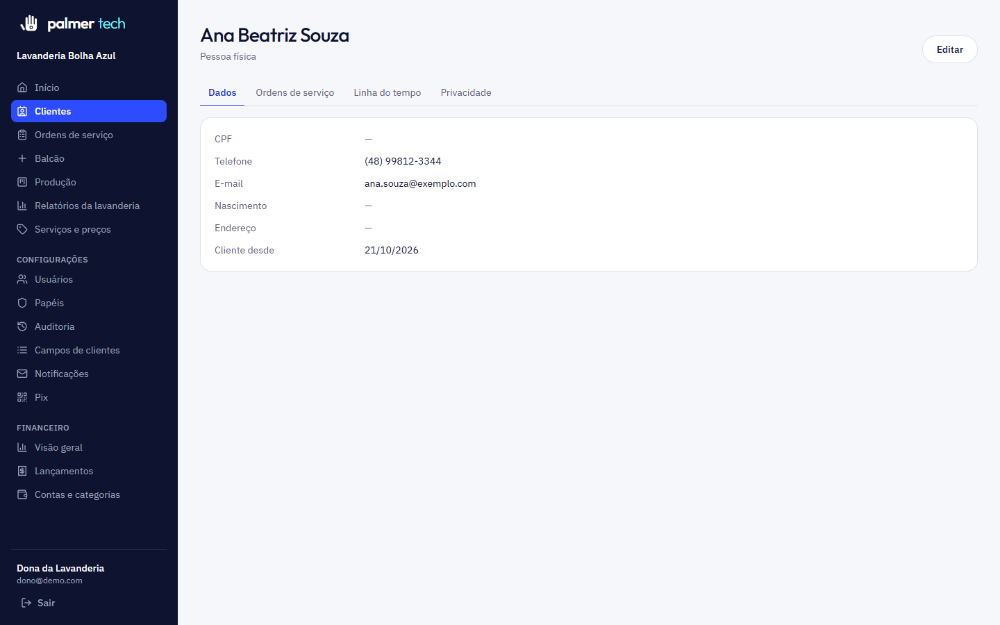
- Dados: o cadastro, inclusive os campos extras que a sua empresa criou. Use Editar para alterar.
- Ordens de serviço: todas as ordens do cliente e o botão para abrir uma nova já com ele selecionado.
- Linha do tempo: tudo o que aconteceu com o cliente, como ordens abertas, pagamentos, ocorrências e autorizações.
- Privacidade: as autorizações de contato e os pedidos do titular (LGPD).
Privacidade e LGPD
Avisos sobre os serviços (ordem recebida, peças prontas) são enviados por padrão. Se o cliente pedir para não receber, desmarque. Ofertas por e-mail ou WhatsApp só podem ser marcadas com a autorização do cliente. Cada mudança fica registrada com data e origem.
Quem tem permissão também vê dois botões:
- Exportar dados (JSON): atende o pedido de acesso. Gera um arquivo com tudo o que a empresa guarda sobre o cliente.
- Anonimizar: atende o pedido de eliminação. Apaga nome, documento, contatos e observações. Os valores financeiros continuam, porque a empresa precisa guardá-los.
A anonimização não pode ser desfeita. Use somente quando o próprio cliente pedir a exclusão dos dados.
4 · LavanderiaBalcão: abrir uma ordem
É aqui que você recebe as peças do cliente. Cada peça ganha uma etiqueta com um código próprio, que acompanha a peça até a entrega.
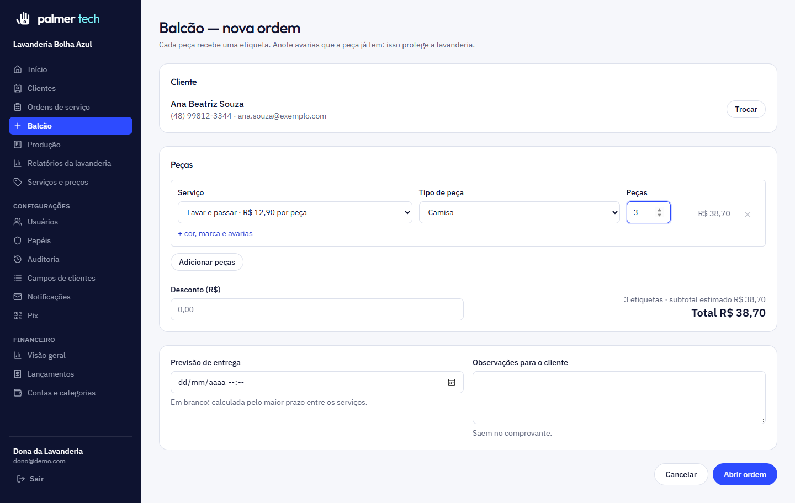
- No menu, clique em Balcão.
- Busque o cliente pelo nome, CPF ou telefone e clique nele. Se ainda não for cliente, use Cadastrar cliente.
- Para cada grupo de peças, escolha o serviço, o tipo de peça e a quantidade. Em serviços cobrados por quilo, informe também o peso; a quantidade de peças serve só para conferência.
- Clique em + cor, marca e avarias para anotar como a peça chegou: manchas, rasgos, botão faltando. Essas anotações saem no comprovante e protegem a lavanderia.
- Use Adicionar peças para outro serviço ou tipo de peça. Confira o total e informe um desconto, se houver.
- A previsão de entrega pode ficar em branco: o sistema usa o maior prazo entre os serviços escolhidos.
- Clique em Abrir ordem. Se o cliente tiver e-mail, ele recebe “Recebemos suas peças”.
De onde vêm os preços? Do cadastro em Serviços e preços. Um serviço pode ter preço diferente por tipo de peça; por exemplo, lavar e passar um terno custa mais que uma camisa.
Etiquetas e comprovante
Na ordem aberta, use os botões Etiquetas e Comprovante no canto superior direito e depois Imprimir. O código da etiqueta segue o padrão nº da ordem-sequência: a etiqueta 3-01 é a primeira peça da ordem nº 3.
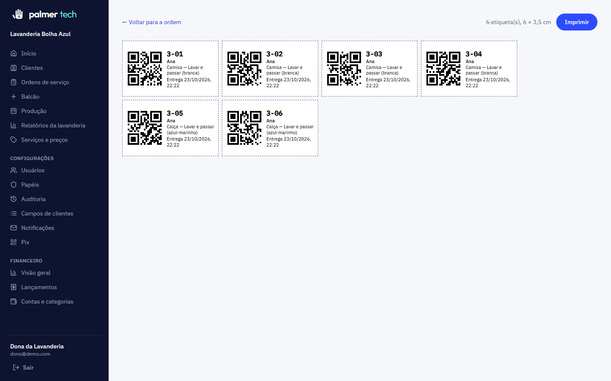
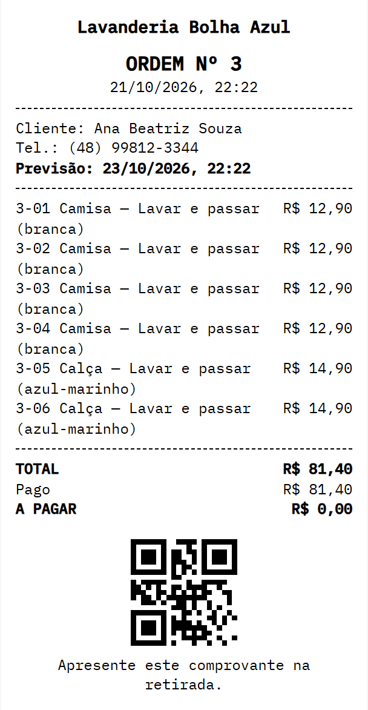
5 · AcompanhamentoA ordem de serviço
A ordem reúne as peças, o pagamento e o histórico. Ela passa por estes status:
Na lavanderia, Em produção e Pronta mudam sozinhas conforme as peças avançam na produção. Você só precisa marcar a entrega (Entregue ou Saiu para entrega) ou cancelar a ordem.
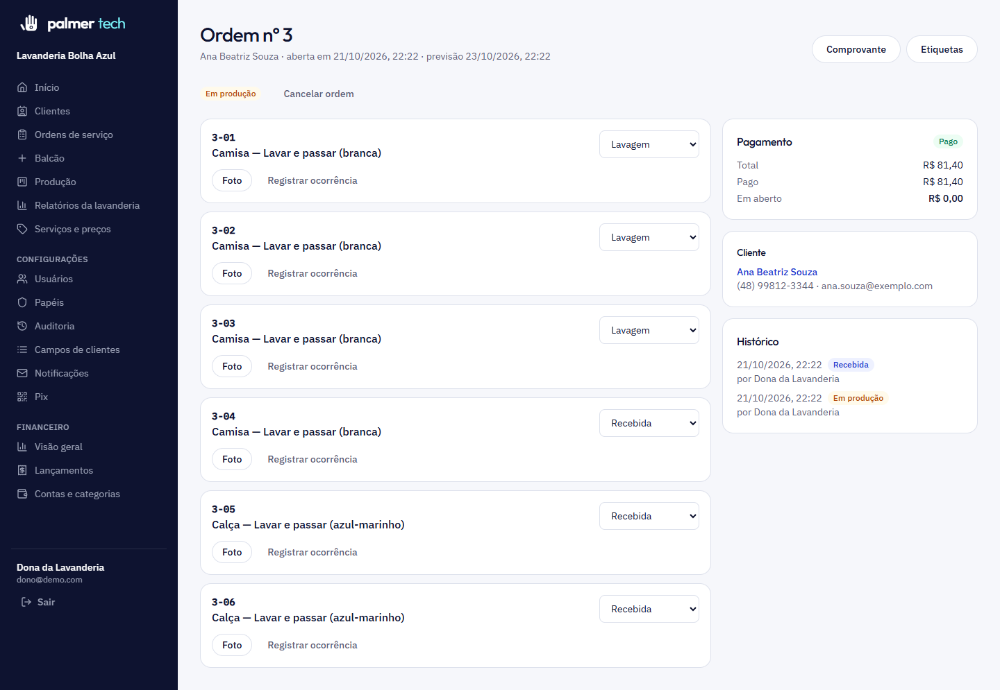
Peças
- Etapa: mude pela lista ao lado de cada peça. Para mover muitas peças, use a tela de Produção.
- Foto: registre manchas e avarias. No celular, abre direto a câmera.
- Registrar ocorrência: use quando algo acontecer durante o processo, como uma mancha que não saiu ou um botão que caiu. O cliente recebe um e-mail com a sua descrição. Se puder, anexe uma foto antes.
Receber um pagamento
- No quadro Pagamento, clique em Registrar pagamento.
- O valor já vem com o saldo em aberto. Altere se o cliente pagar só uma parte.
- Escolha a forma de pagamento e a conta onde o dinheiro entrou (por exemplo, Caixa).
- Clique em Registrar. O pagamento entra sozinho no Financeiro, e o que faltar pagar continua como “a receber”.
Pix com QR Code
Com o Pix configurado, escolha a forma Pix e clique em Gerar QR Code Pix. O cliente lê o QR com o aplicativo do banco ou você copia o código “copia e cola” e envia para ele.
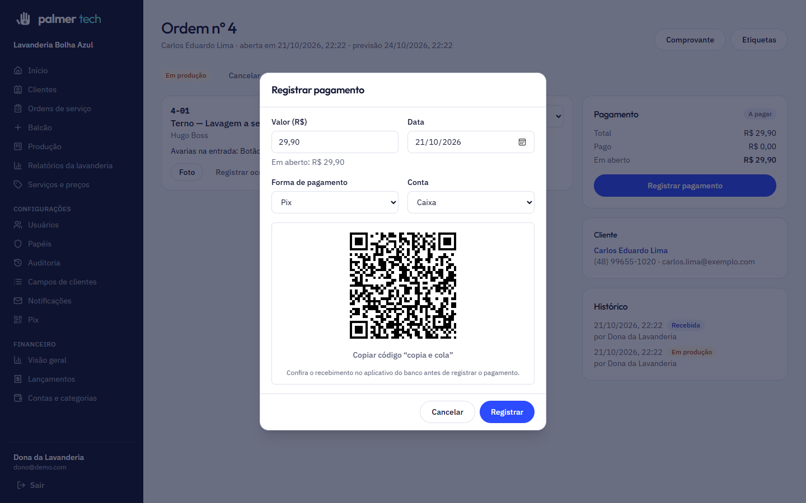
O sistema não sabe sozinho que o Pix caiu. Confira o recebimento no aplicativo do banco e só depois clique em Registrar.
Cancelar uma ordem
Clique em Cancelar ordem e informe o motivo. O valor em aberto sai do “a receber”. Pagamentos já feitos continuam registrados; se houver devolução ao cliente, lance-a como despesa no Financeiro.
Todas as ordens
Em Ordens de serviço você vê todas as ordens, busca pelo número ou nome do cliente e filtra por status.
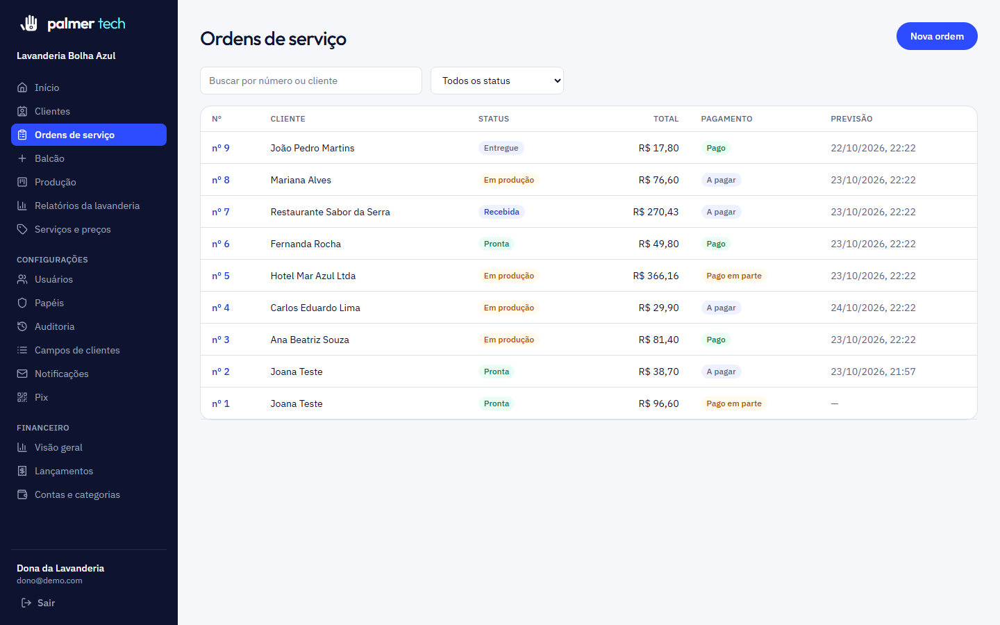
6 · LavanderiaProdução
O quadro mostra as peças das ordens em andamento, uma coluna para cada etapa. As peças mais urgentes aparecem primeiro, e as atrasadas ficam em vermelho. A tela se atualiza sozinha a cada 30 segundos.
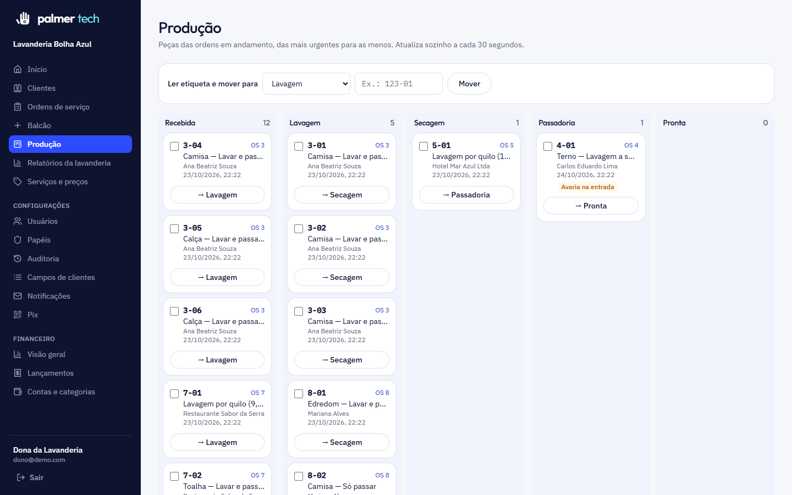
- Uma peça: clique no botão → próxima etapa do cartão.
- Várias peças: marque as caixas, escolha a etapa na barra que aparece no topo e clique em Mover.
- Pela etiqueta: em Ler etiqueta e mover para, escolha a etapa e leia o QR Code com o leitor (ou digite o código, como
3-01, e tecle Enter). Cada leitura move uma peça. Leitores de código USB funcionam como teclado e não precisam de configuração.
Os selos no cartão avisam o que pede atenção: Avaria na entrada, Ocorrência, Retrabalho e a quantidade de fotos.
Retrabalho: voltar uma peça para uma etapa anterior conta como retrabalho. Se a ordem já estava pronta, ela volta para “Em produção”, e o cliente só é avisado de novo quando tudo ficar pronto.
Tudo pronto: quando a última peça chega em “Pronta”, a ordem muda sozinha para Pronta e o cliente recebe “Suas peças estão prontas”.
7 · DinheiroFinanceiro
Dois conceitos ajudam a ler esta área:
- Realizado: dinheiro que de fato entrou ou saiu, contado pela data do pagamento.
- Previsto: o que está em aberto (a receber ou a pagar), contado pela data de vencimento.
Visão geral
Escolha o período no canto superior direito. Os cartões mostram o que foi recebido, o que foi pago, o resultado e os valores vencidos. O gráfico compara receitas e despesas por mês; passe o mouse sobre um mês para ver os valores. Abaixo ficam a tabela mês a mês, os totais por categoria e o saldo de cada conta.
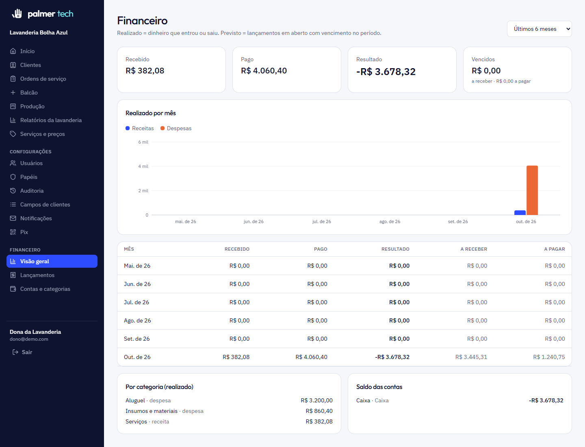
Lançamentos
Aqui ficam todas as contas a receber e a pagar. Filtre por situação (em aberto, vencidos, pagos, cancelados), tipo, período ou descrição.
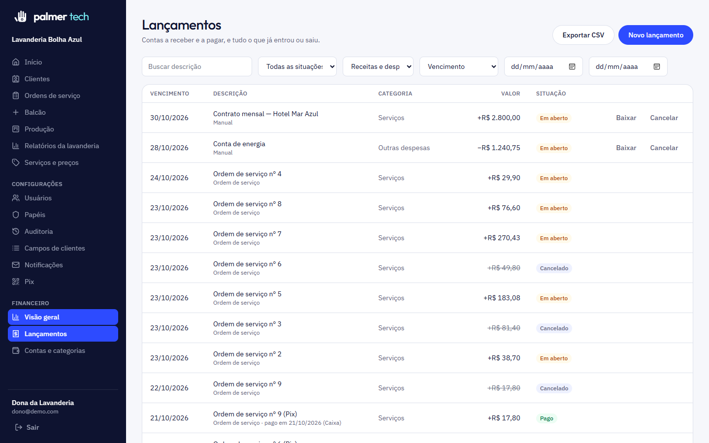
- Para lançar uma despesa (aluguel, fornecedor, energia) ou uma receita avulsa, clique em Novo lançamento.
- Informe o tipo, a descrição, o valor, o vencimento e a categoria.
- Se já foi pago, escolha Já pago e informe a data e a conta. Senão, deixe Em aberto.
- Quando pagar ou receber uma conta em aberto, clique em Baixar na linha dela.
Valores das ordens de serviço entram aqui sozinhos, com a origem “Ordem de serviço”. Para eles, registre o pagamento na própria ordem, não por aqui.
Para o contador: Exportar CSV gera uma planilha que abre direto no Excel, com os filtros que estiverem aplicados.
Contas e categorias
Cadastre as contas onde o dinheiro fica (caixa, bancos, maquininha) com o saldo inicial, e as categorias usadas para classificar receitas e despesas. As categorias padrão do sistema, como “Serviços”, são usadas pelas ordens de serviço e não podem ser desativadas.
8 · IndicadoresRelatórios da lavanderia
Escolha o período (hoje, últimos 7, 30 ou 90 dias) para ver como a operação está indo.
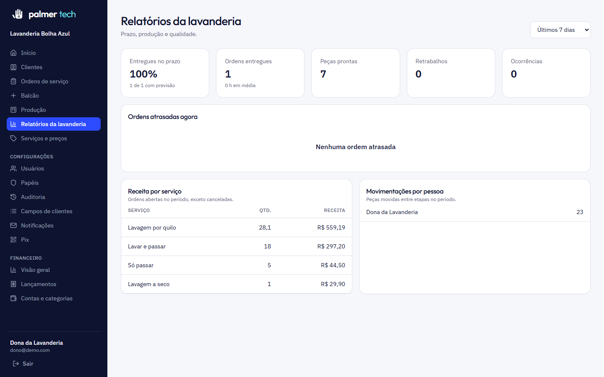
| Indicador | O que mostra |
|---|---|
| Entregues no prazo | Das ordens entregues no período que tinham previsão, quantas saíram até a data prometida. |
| Ordens entregues | Quantas ordens foram entregues e quantas horas levaram, em média, da abertura à entrega. |
| Peças prontas | Quantas peças chegaram à etapa “Pronta” no período. |
| Retrabalhos | Quantas vezes uma peça voltou de etapa. |
| Ocorrências | Quantas ocorrências foram registradas e avisadas aos clientes. |
| Ordens atrasadas agora | Ordens em andamento cuja previsão já passou. Comece por elas. |
| Receita por serviço | Valor das ordens abertas no período por serviço, sem contar as canceladas. |
| Movimentações por pessoa | Quantas peças cada pessoa moveu entre etapas. |
9 · Para o donoConfigurações
Estas telas costumam ficar só com o dono ou com quem ele autorizar.
Usuários
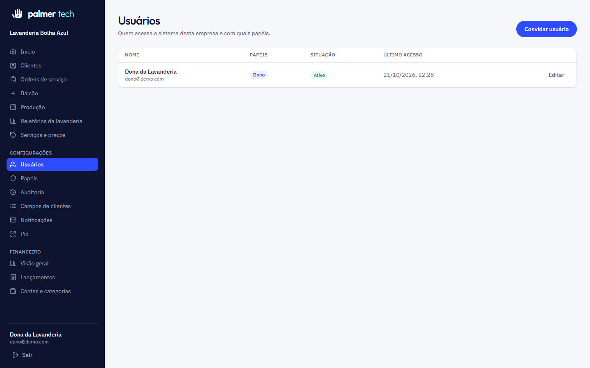
- Clique em Convidar usuário, informe nome e e-mail e marque os papéis.
- A pessoa recebe o convite por e-mail e cria a própria senha. Se ela já usa o sistema em outra empresa, o acesso é liberado na hora.
- Para mudar papéis ou tirar o acesso, clique em Editar. Desmarcar Acesso ativo desconecta a pessoa imediatamente.
A empresa precisa ter sempre pelo menos um dono ativo, e ninguém pode desativar o próprio acesso.
Papéis e permissões
Cada usuário pode ter um ou mais papéis. Os papéis padrão acompanham os módulos contratados e não podem ser alterados:
| Papel | O que pode fazer |
|---|---|
| Dono | Tudo, inclusive usuários, papéis, financeiro e configurações. |
| Atendente | Cadastrar clientes, abrir ordens no balcão, mudar status, receber pagamentos e cuidar de coletas e entregas. |
| Operador | Ver as ordens e mover as peças na produção. |
| Motorista | Ver as ordens e os clientes, mudar status e cuidar de coletas e entregas. |
Para uma combinação diferente (por exemplo, um gerente que vê o financeiro mas não cria usuários), clique em Novo papel e marque as permissões, agrupadas por módulo.
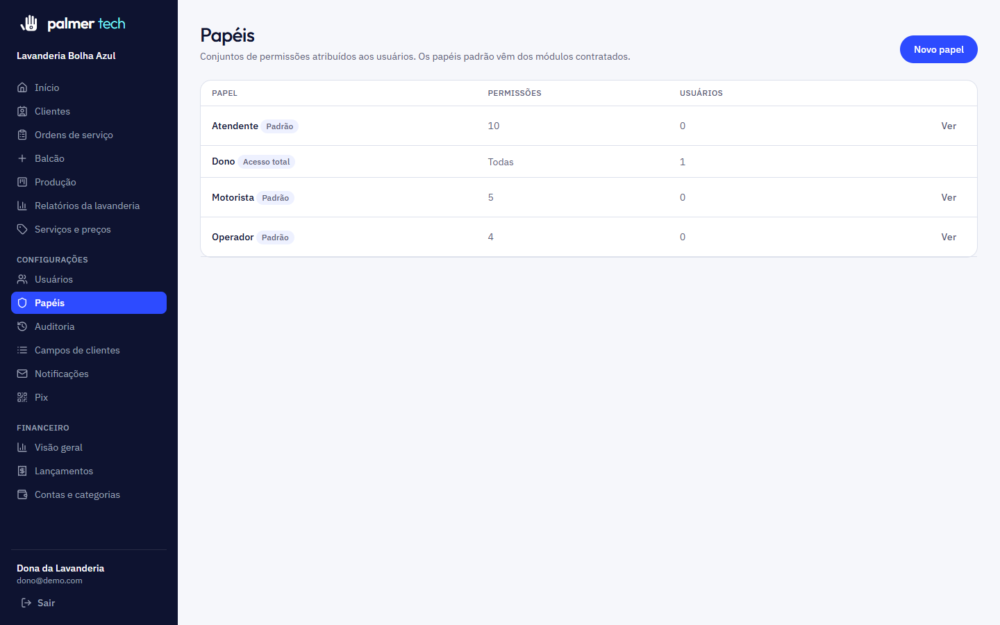
Serviços e preços
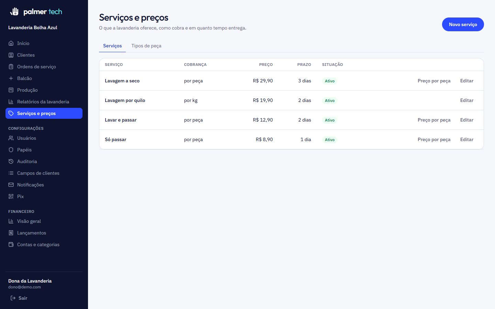
- Novo serviço: nome, forma de cobrança (por peça, por kg ou por m²), preço, prazo em horas e se está ativo.
- Preço por peça: preços diferentes por tipo de peça. Em branco, vale o preço base do serviço.
- Aba Tipos de peça: inclua os tipos que o balcão usa (Camisa, Terno, Edredom…) ou desative os que não usa.
Notificações
Na aba Mensagens você ajusta o texto dos e-mails automáticos, como “Recebemos suas peças”, “Suas peças estão prontas” e o aviso de ocorrência. Use as variáveis entre chaves, como {{cliente.nome}} e {{os.numero}}, que o sistema troca pelos dados de cada ordem. Voltar ao texto padrão desfaz a personalização.
Na aba Enviadas fica o histórico de cada mensagem: Enviada, Na fila ou Não enviada, com o motivo, por exemplo “Cliente sem e-mail cadastrado”.
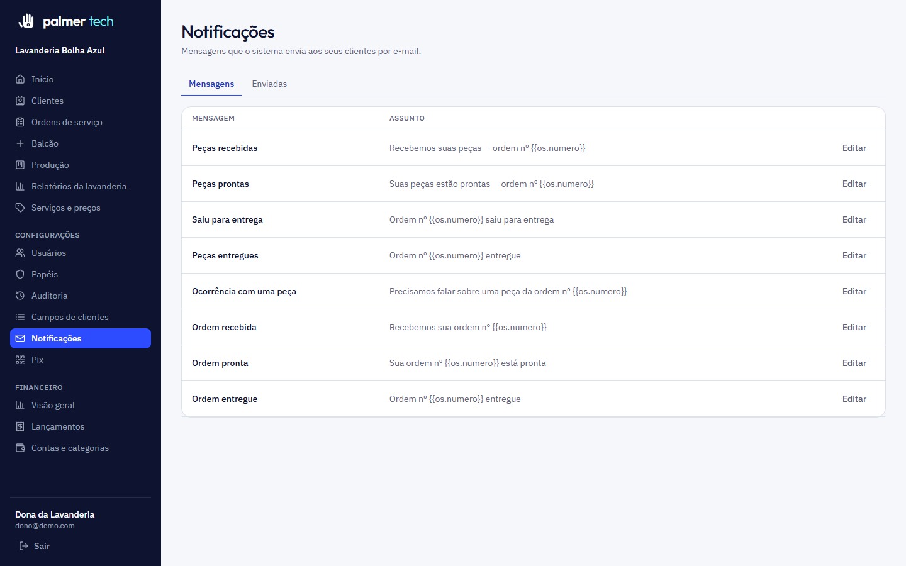
Pix
Informe a chave Pix da empresa (CPF/CNPJ só com números, e-mail, telefone no formato +5548… ou chave aleatória), o nome do recebedor (até 25 letras) e a cidade (até 15). Gere o QR de teste de R$ 0,01 e leia com o aplicativo do banco para conferir se o recebedor está certo.
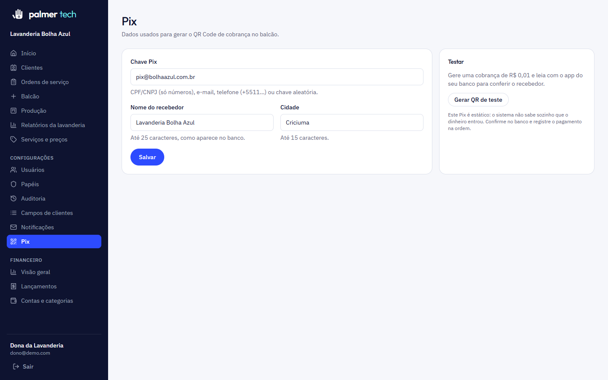
Campos de clientes e auditoria
Em Campos de clientes você cria informações extras para o cadastro, como “Como conheceu a empresa” (lista de opções) ou “Preferência de contato”. O tipo do campo não pode ser mudado depois.
Em Auditoria o dono vê quem fez o quê e quando: ordens abertas, pagamentos, mudanças de usuários e papéis, exportações de dados.
10 · AjudaDúvidas frequentes
- Não encontro uma tela no menu.
- O menu mostra só o que o seu papel permite e o que a empresa contratou. Peça ao dono para revisar os seus papéis em Configurações › Usuários.
- O cliente diz que não recebeu o e-mail.
- Veja Configurações › Notificações › Enviadas. Se aparecer “Não enviada”, o motivo está ao lado: cliente sem e-mail cadastrado, ou que pediu para não receber avisos (aba Privacidade da ficha). Se aparecer “Enviada”, peça para o cliente olhar a caixa de spam.
- Ao marcar a ordem como pronta, aparece “Ainda há peças em produção”.
- A ordem só fica pronta quando todas as peças estão na etapa “Pronta”. Mova as peças que faltam na tela de Produção; a ordem muda sozinha.
- O cliente pagou o Pix, mas a ordem continua em aberto.
- A confirmação do Pix é manual. Confira o recebimento no aplicativo do banco e registre o pagamento na ordem.
- O link do convite ou da senha expirou.
- Na tela de login, clique em “Esqueci minha senha” e use o mesmo e-mail. Você recebe um link novo.
- Fui desconectado do sistema.
- Isso acontece quando a senha é trocada, quando o seu acesso é desativado ou por segurança, se a sessão parecer usada em outro lugar. Entre de novo; se não conseguir, fale com o dono da empresa.
- Errei o valor de um lançamento.
- Lançamentos feitos à mão podem ser cancelados e lançados de novo. Os que vieram de uma ordem de serviço são corrigidos na própria ordem.
11 · TermosGlossário
| Ordem de serviço (OS) | O pedido do cliente: peças, valor, pagamento e status. Tem um número sequencial da sua empresa. |
| Etiqueta | Código de cada peça (ex.: 3-01), impresso com QR Code e preso à peça. |
| Etapa | Onde a peça está na produção: Recebida, Lavagem, Secagem, Passadoria ou Pronta. |
| Ocorrência | Algo que aconteceu com a peça durante o processo e foi avisado ao cliente. |
| Retrabalho | Peça que voltou para uma etapa anterior. |
| Papel | Conjunto de permissões de um usuário (Dono, Atendente, Operador, Motorista ou um papel criado pela empresa). |
| Módulo | Parte do sistema que a empresa contrata, como Lavanderia, Ordens de serviço, Notificações ou Pix. |
| Realizado / previsto | Dinheiro que já entrou ou saiu / valores em aberto que ainda vão vencer. |